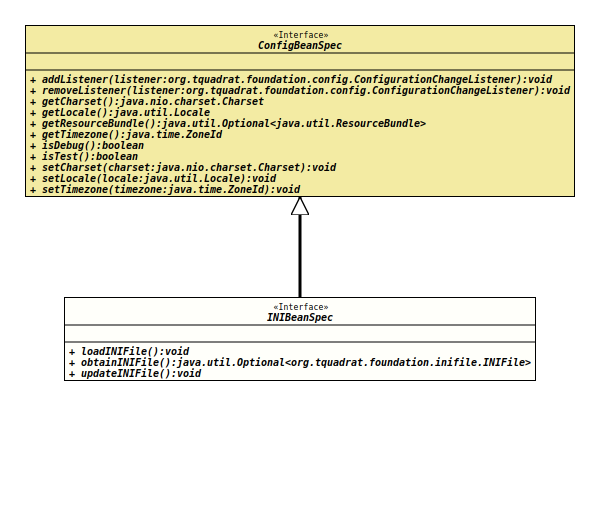

- All Superinterfaces:
ConfigBeanSpec
When a configuration bean should be connected with an
INI
file (a Windows style configuration file), the respective configuration
bean specification interface needs to extend this interface.
A configuration bean can be connected to only one INI file, and
properties that are kept in
Preferences
cannot be held in the INI, too, and vice versa.
The configuration bean specification must use the annotation
@INIFileConfig
to specify the path to the configuration file. In addition, each getter has
to be annotated with
@INIValue
to define its coordinates in the configuration.
When the file is created by the program itself, the respective
comments from the annotations will be added to the new file; for the
groups, these can be provided through the
@INIGroup
and
@INIGroups
annotations
The configuration values will not be loaded automatically from
the INI file. A call to
loadINIFile()
is required.
A call to
updateINIFile()
persists the respective value.
- Author:
- Thomas Thrien (thomas.thrien@tquadrat.org)
- Version:
- $Id: INIBeanSpec.java 1061 2023-09-25 16:32:43Z tquadrat $
- Since:
- 0.1.0
- UML Diagram
-

UML Diagram for "org.tquadrat.foundation.config.INIBeanSpec"
{kind=link}
-
Method Summary
Modifier and TypeMethodDescriptionvoidLoads the configuration values from theINIFilethat is connected to this configuration bean.Returns a reference to theINIFileinstance that backs up this configuration bean.voidPersists the configuration values to theINIFilethat is connected to this configuration bean.Methods inherited from interface org.tquadrat.foundation.config.ConfigBeanSpec
addListener, getCharset, getLocale, getResourceBundle, getTimezone, isDebug, isTest, removeListener, setCharset, setLocale, setTimezone
-
Method Details
-
loadINIFile
void loadINIFile()Loads the configuration values from theINIFilethat is connected to this configuration bean. -
obtainINIFile
Returns a reference to theINIFileinstance that backs up this configuration bean.- Returns:
- An instance of
Optionalthat holds theINIFileinstance.
-
updateINIFile
void updateINIFile()Persists the configuration values to theINIFilethat is connected to this configuration bean.
-